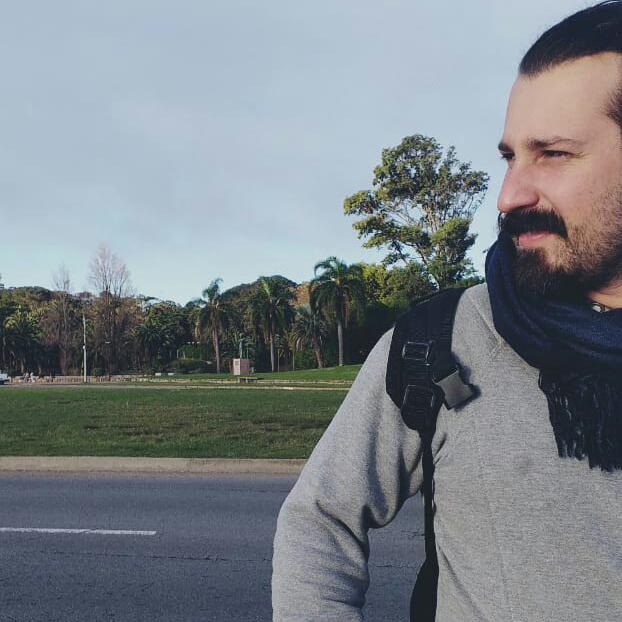

artigo artigo artigo artigo artigo artigo artigo artigo artigo artigo artigo artigo artigo artigo artigo artigo artigo artigo artigo artigo artigo artigo artigo artigo artigo artigo artigo artigo artigo artigo artigo artigo artigo artigo artigo artigo artigo artigo artigo artigo artigo artigo artigo artigo
Quem sou eu?
Meu nome é Nícolas Tozato, nascido em São José dos Campos-SP e atualmente morando em Anápolis-Go. Após receber um anúncio da Trybe, via Facebook, decidi fazer o processo seletivo. Entre os quase 8500 candidatos que buscavam por uma das 146 vagas, fui selecionado.
Lições
- Unix
- Bash
- Internet
- HTML
- CSS
- HTML semântico
- Git
- Github
- Slack
- Zoom
Lições a aprender
- Python
- MySQL
- Javascript
- JavascriptES6
- React
- Unit Tests
- DOM
- HOF
- Node
- Forms